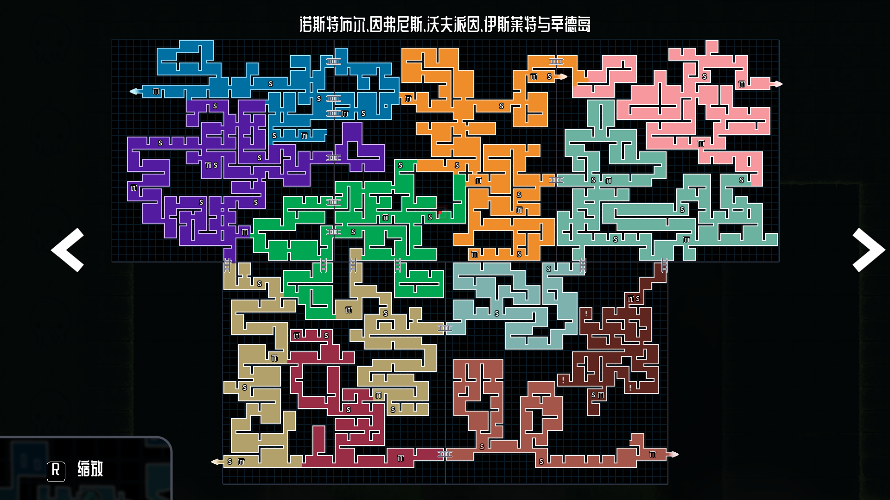

天空之城Sky City
Sky City · 永久枢纽
作用商店、邮件、飞艇升级Shops, mail, airship upgrades
识别城镇平台与飞艇停靠区Town platforms and airship dock
- 每次开启新航线后回来检查邮件和商店。
- Return after opening routes to check mail and shops.
先按岛屿找到当前画面，再进入对应流程章节。这里记录区域特征、核心目标、首领和能力回访点。Find your current island by its visual identity, then open the matching walkthrough chapter.

Sky City · 永久枢纽
NorthStable Island
Inverness Island · 墓穴遗迹
Wolfpine Island · 灵魂港 / 雨原
Eastwright Island · 钟表工坊
Cinder Island · 终局路线